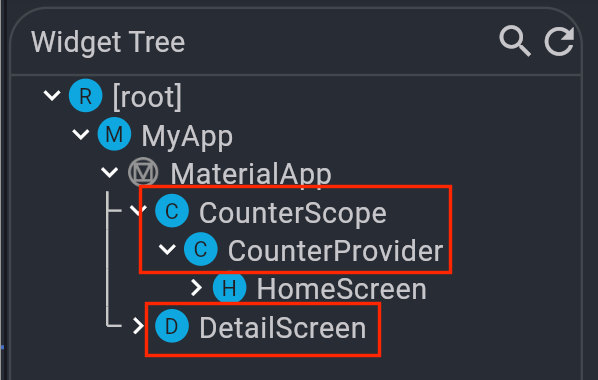
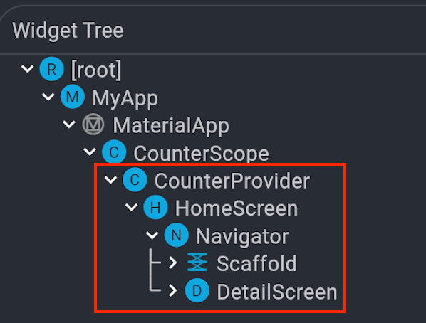
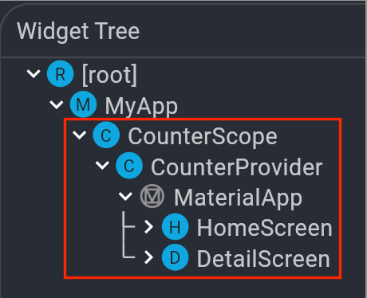

문제 상황
- 상위 위젯에서 추가한
InheritedWidget을 하위 widget에서 접근하지 못하는 문제 BuildContext.dependOnInheritedWidgetOfExactType이null을 반환해서 property 및 method를 호출할 수 없음
예제 코드
문제를 재현하는 간단한 counter app
-
HomeScreen및DetailScreen은 버튼을 눌러서 count 증가 -
HomeScreen과DetailScreen은 count 값(state) 공유 -
Count 값을 하위 widget에 공유하기 위한
InheritedWidget생성class CounterProvider extends InheritedWidget { const CounterProvider({ super.key, required super.child, required this.counter, required this.incrementCounter, }); final int counter; // ✅ count 값 공유 final void Function() incrementCounter; // ✅ count action 공유 @override bool updateShouldNotify(covariant InheritedWidget oldWidget) => true; static CounterProvider? of(BuildContext context) => context.dependOnInheritedWidgetOfExactType<CounterProvider>(); } -
공유 상태를 관리하기 위한
StatefulWidget생성class CounterScope extends StatefulWidget { const CounterScope({ super.key, required this.child, }); final Widget child; @override State<CounterScope> createState() => _CounterScopeState(); } class _CounterScopeState extends State<CounterScope> { // ✅ 실제 상태 값 관리 : 상태 저장 및 갱신(setState) int counter = 0; void incrementCounter() { setState(() { counter++; }); } @override Widget build(BuildContext context) { return CounterProvider( counter: counter, incrementCounter: incrementCounter, child: widget.child, ); } } -
MyApp의home에서CounterScope를HomeScreen의 상위 widget으로 추가class MyApp extends StatelessWidget { const MyApp({super.key}); // This widget is the root of your application. @override Widget build(BuildContext context) { return MaterialApp( title: 'Navigator Inherited Example', theme: ThemeData( colorScheme: ColorScheme.fromSeed(seedColor: Colors.deepPurple), useMaterial3: true, ), // ✅ CounterScope가 HomeScreen의 상위 widget이 됨 home: const CounterScope(child: HomeScreen()), ); } }
문제 재현
-
HomeScreen에서는CounterProvider에 접근할 수 있음class HomeScreen extends StatelessWidget { const HomeScreen({super.key}); @override Widget build(BuildContext context) { return Scaffold( appBar: ..., body: Center( child: CountLabel( counter: CounterProvider.of(context)?.counter ?? -1, // ✅ ), ), floatingActionButton: IncrementButton( onPressed: CounterProvider.of(context)?.incrementCounter, // ✅ ), ); } } -
Navigator.push로DetailScreen으로 이동// 버튼 callback onPressed: () => Navigator.of(context).push( MaterialPageRoute( builder: (context) => const DetailScreen(), ), ), -
DetailScreen에서는CounterProvider에 접근할 수 없음// 버튼 callback class DetailScreen extends StatelessWidget { const DetailScreen({super.key}); @override Widget build(BuildContext context) { return Scaffold( appBar: AppBar( backgroundColor: Theme.of(context).colorScheme.inversePrimary, title: const Text('Detail Page'), ), body: Center( child: CountLabel( // ❌ : null을 반환하므로 label에 '-1' 표시 counter: CounterProvider.of(context)?.counter ?? -1, ), ), floatingActionButton: IncrementButton( // ❌ : null을 반환하므로 counter가 동작하지 않음 onPressed: CounterProvider.of(context)?.incrementCounter, ), ); } }
원인 분석
InheritedWidget에 접근하는 방식
BuildContext.dependOnInheritedWidgetOfExactType은 현재 widget에서 widget tree상의 상위 widget을 찾아서 반환함- 즉,
BuildContext.dependOnInheritedWidgetOfExactType이null이면 widget tree에서 상위에InheritedWidget이 존재하지 않는다는 것
Navigator.of(context).push의 동작 방식
MaterialApp은 내부에서Navigator를 만들고 widget tree에 추가한다.MaterialApp.home에 전달하는 widget은 이 최상위Navigator의 child widget이 된다.MaterialApp ㄴ Navigator ㄴ HomeScreen- Widget에서
Navigator.of(context)을 호출하면MaterialApp이 생성한 최상위Navigator를 얻는다. - Screen A에서 screen B로
Navigator.push를 통해 화면을 전환하면, 최상위Navigator의 하위에 screen B를 추가하며 화면에 렌더링한다. - 즉, screen A와 B는 같은 root
Navigator에 의해 sibling 관계로 widget tree에 추가된다.
문제 발생 원인
- Widget tree를 열어보면
DetailScreen과CounterProvider가 ancestor-descendant 관계가 아닌 sibling 관계인 것을 확인할 수 있음  BuildContext.dependOnInheritedWidgetOfExactType는 widget tree상의 ancestorInheritedWidget을 찾는 것이므로, sibling 관계에서는 접근할 수 없다.HomeScreen에서는CounterProvider가 direct ancestor widget이기 때문에CounterProvider에 정상적으로 접근할 수 있었다.
해결 방법
CounterProvider와 DetailScreen을 ancestor-descendant 관계로 만들어 준다.
HomeScreen하위Navigator가DetailScreen을 push 하도록 수정InheritedWidget의 위치를 최상위Navigator의 ancestor로 변경 (MaterialApp위)
HomeScreen 하위 Navigator가 DetailScreen을 push 하도록 수정
-
HomeScreen을 아래와 같이 수정한다.class HomeScreen extends StatelessWidget { const HomeScreen({super.key}); @override Widget build(BuildContext context) { // ✅ HomeScreen 하위에 Navigator 추가 // 이제 `Navigator.of(context)`는 이 Navigator를 반환한다. return Navigator( onGenerateRoute: (settings) => MaterialPageRoute( builder: (context) => ..., // 원래 widget 덩어리 반환 ), ); } }HomeScreen의build()method에서Navigator를 반환한다.Navigator의onGenerateRoute함수에서MaterialPageRoute를 반환한다.MaterialPageRoute의builder함수에서HomeScreen을 구성하는Scaffoldwidget 덩어리를 반환한다.
-
이제
HomeScreen에서Navigator.of(context)를 호출하면 최상위Navigator가 아닌HomeScreen의 하위Navigator를 사용하므로DetailScreen이HomeScreen의 child widget으로 추가된다. 
InheritedWidget의 위치를 최상위 Navigator의 ancestor로 변경
-
DetailScreen이MaterialApp아래에서InheritedWidget을 child로 갖는HomeScreen과 sibling 관계를 갖는 것이 문제이므로,InheritedWidget을MaterialApp의 상위 widget으로 올려서HomeScreen과DetailScreen의 공통 ancestor widget이 될 수 있게 만든다.class MyApp extends StatelessWidget { const MyApp({super.key}); // This widget is the root of your application. @override Widget build(BuildContext context) { // ✅ CounterScope와 CounterProvider가 MaterialApp보다 상위 widget이 된다. return CounterScope( child: MaterialApp( title: 'Navigator Inherited Example', theme: ThemeData( colorScheme: ColorScheme.fromSeed(seedColor: Colors.deepPurple), useMaterial3: true, ), // ✅ `HomeScreen`을 감싸고 있던 CounterScope는 제거한다. home: const HomeScreen(), ), ); } } -
이제
HomeScreen과DetailScreen이 sigling 관계여도CounterProvider를 공통 ancestor로 가지므로, 두 widget 모두BuildContext를 통해CounterProvider에 접근할 수 있다.
결론
Navigator.of(context)는MaterialApp이 만드는 최상위Navigator에 접근한다.Navigator.push는 route widget을Navigator의 child로 추가한다.- 여러 화면에서 공통으로 사용되는 state는 navigation 이후 widget tree 구조를 고려해서 위치시켜야 한다.
Navigator를 직접 추가하는 방법은 history를 모르면 예상치 못한 버그가 발생할 우려가 있으므로,InheritedWidget을Navigator보다 상위에 위치시키는 방법이 더 좋아 보인다.- Riverpod에서
ProviderScope가runApp바로 아래에서MyApp을 wrapping하게 만드는 이유를 조금이나마 이해했다. ProviderScope는 내부build()method에서InheritedWidget을 상속받는UncontrolledProviderScope를 반환한다.- Riverpod도 비슷한 문제를 해결하기 위해 최상위에
InheritedWidget을 놓으려는 시도를 한 것 같다.
- Riverpod에서